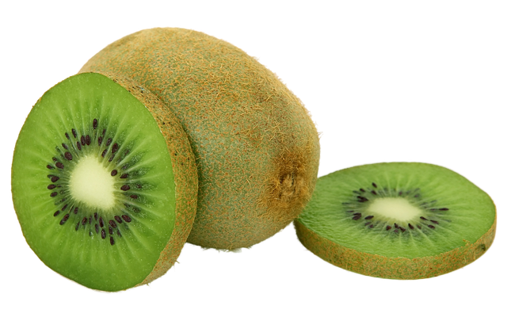
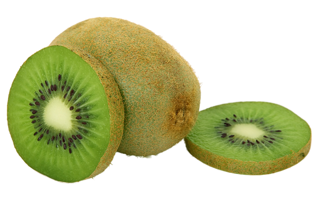

Keto Facts
This popular diet has been used to treat epilepsy and may improve insulin sensitivity, but it has its downsides, too.
vegan Facts
By now you may have heard about the famed “Seafood Tower” at Crossroads Kitchen, an all-vegan restaurant in Los Angeles.
While the tower spotlights vegan versions of several traditional seafood dishes, the star of the show is most certainly the Tempura Battered Lobster Mushrooms. With a natural seafood-like flavor, these make for the perfect lobster substitute. According to owner Tal Ronnen, they also served as inspiration for the tower itself.
This popular diet has been used to treat epilepsy and may improve insulin sensitivity, but it has its downsides, too.
Fruit Facts
This popular diet has been used to treat epilepsy and may improve insulin sensitivity, but it has its downsides, too.


 >
>


 
